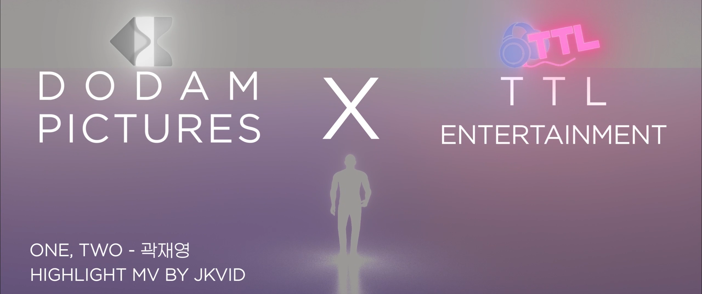
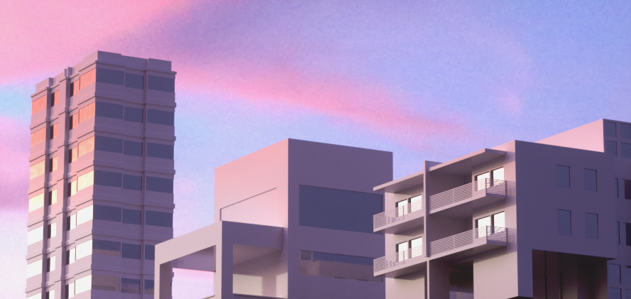

MOTION / VFX
TTL 2023 MV Motion Graphics
A music video motion piece shaped with luminous atmosphere and soft visual depth.


MOTION / VFX
A music video motion piece shaped with luminous atmosphere and soft visual depth.

